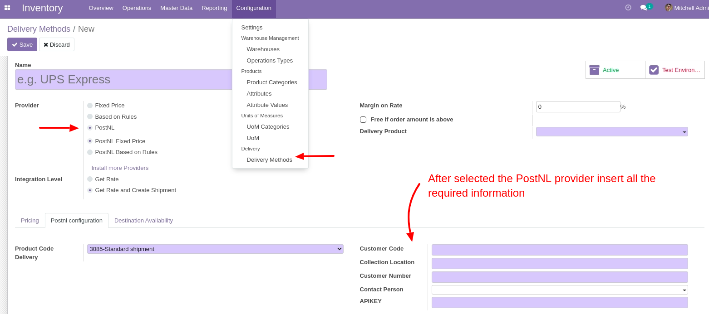
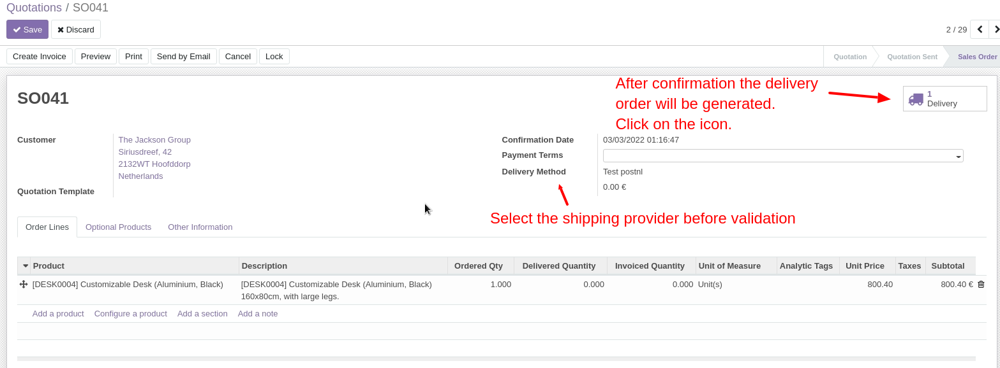
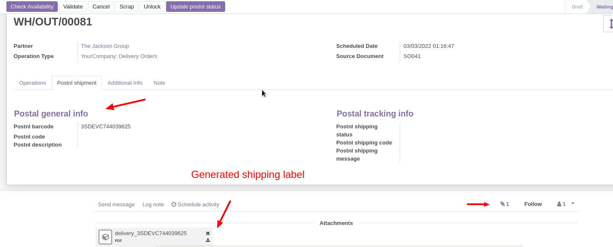

Note: This is a demo integration, and it has been tested only for Netherland shipment in testing mode.
Odoo PostNL Shipping Integration Test
First, the module must be configured. For configuration go to the inventory and add a delivery method.
Inside the form view select the provider postnl and add the necessary information for the connection (api, user code, etc).

After configuration, place a sales order with a product subject to shipping and select the shipping provider previously configured.
Once the order has been validated, the system will automatically generate the delivery order.

s
Within the shipping order you can check the information for postnl within the dedicated tab: barcode and any codes and error messages in case of anomalies.
In addition, the shipping label is automatically generated when the order is created, and it can be download by the user in pdf format.

At this point, the user can manage shipment status updates by clicking on the Update postnl status button.